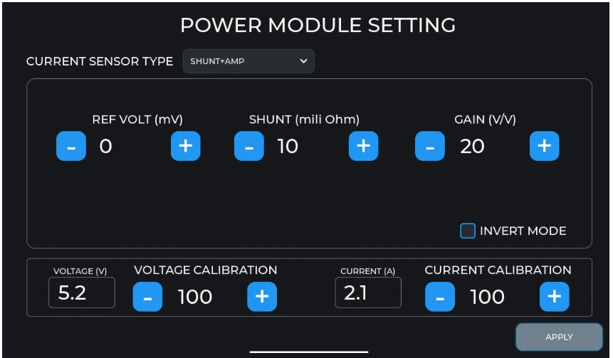
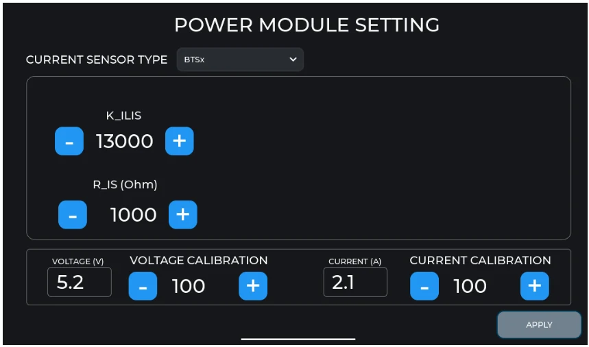
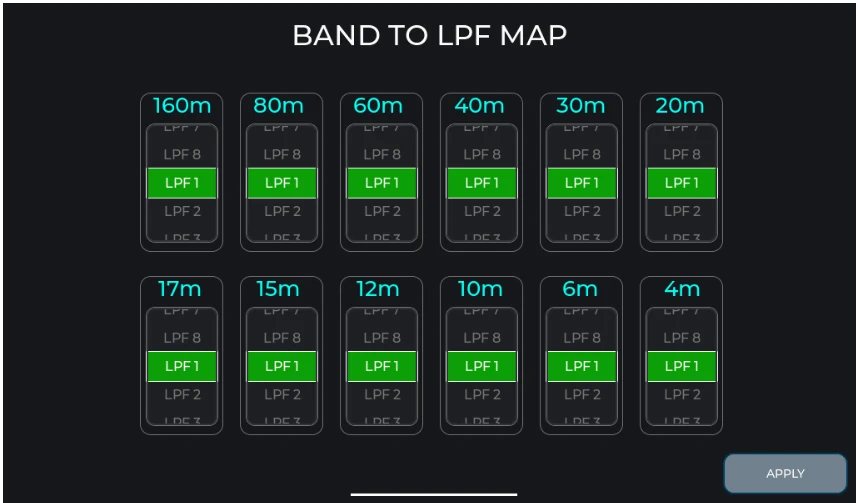
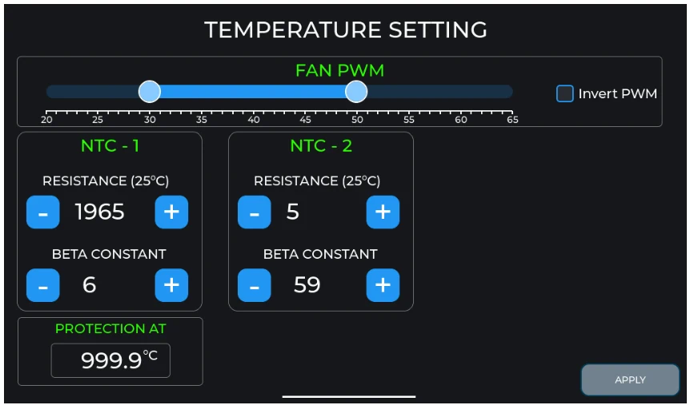
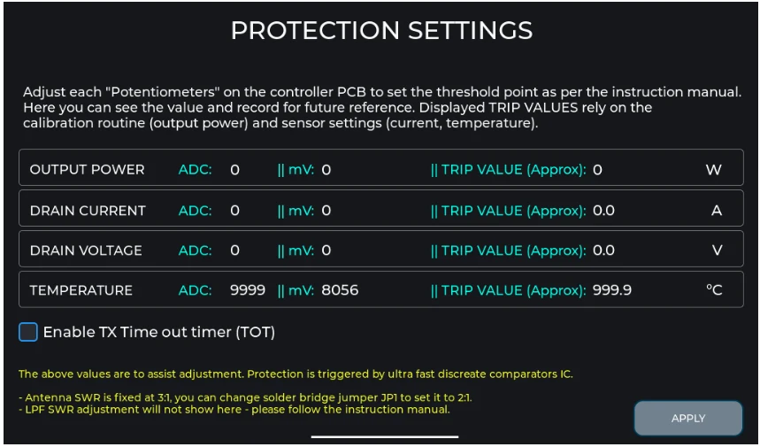
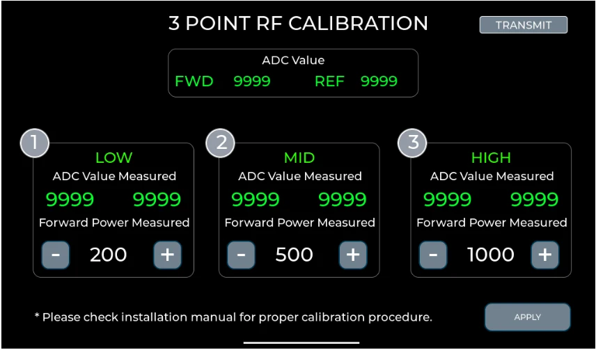
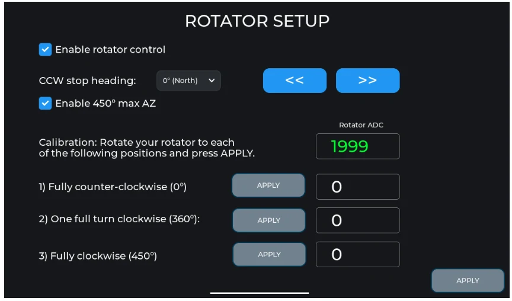
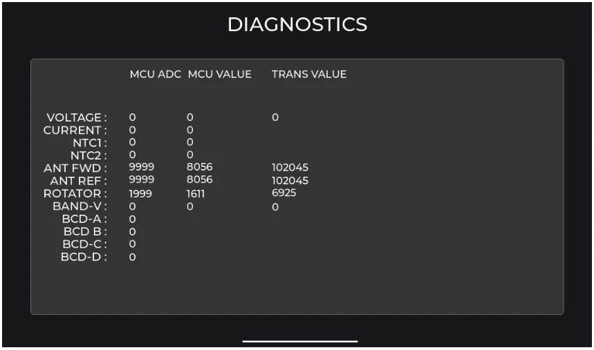

Setup and calibration¶
Configure the controller for your amplifier, in the order below. Every page is opened from the menu (swipe down on the main screen) and saved with APPLY. Configuration Saved confirms that the controller has stored the settings.
RF safety
High RF power. Never operate without a proper load or antenna connected.
Power module (current sensor)¶
Menu → Power. Tells the controller how to read the PA current from your High Side Switch or power module, and trims the voltage and current readings.
Three sensor types are supported. Choose the one your module uses in CURRENT SENSOR TYPE, and take its values from the module's manual or the sensor's datasheet. The fields on the page change with the type.

A shunt resistor with a current-sense amplifier (for example INA240).
| Setting | Enter |
|---|---|
| REF VOLT (mV) | The amplifier's output at zero current. 0 for a unidirectional amplifier. |
| SHUNT (mili Ohm) | The shunt resistance in tenths of a milliohm: 10 = 1.0 mΩ. |
| GAIN (V/V) | The amplifier's gain, for example 20 for an INA240A1. |
| INVERT MODE | Tick if the current reads negative. |
Example: an INA240A1 (gain 20) with a 1 mΩ shunt is REF VOLT 0, SHUNT 10, GAIN 20.
A Hall-effect current sensor.
| Setting | Enter |
|---|---|
| REF VOLT (mV) | The sensor's output at zero current, from its datasheet (often half its supply). |
| HALL SENSITIVITY (mV/A) | The sensitivity in tenths of a mV/A: 400 = 40.0 mV/A. |
| INVERT MODE | Tick if the current reads negative. |

A PROFET high-side switch with a current-sense output (BTS50085 class).
| Setting | Enter |
|---|---|
| K_ILIS | The current-sense ratio from the datasheet, for example 13000. |
| R_IS (Ohm) | The sense resistor fitted on the module. 0 if none is fitted (the controller's own 10.1 kΩ load is then used). |
Calibration (all sensor types): with the PA supply on, compare VOLTAGE (V) and CURRENT (A) with a multimeter. Adjust VOLTAGE CALIBRATION and CURRENT CALIBRATION (percent, 50–150, 100 = no correction) until they match. The readings update as you press the buttons. Tap APPLY.
LPF map¶
Menu → LPF Map. Chooses which of the eight LPF banks (BAND1–BAND8 outputs) each band uses.

- Scroll each band's roller to its LPF bank (LPF 1 = BAND1 output, and so on). Bands that share a filter use the same bank.
- Tap APPLY.
- Check it: tap each band button on the main screen and confirm that the right filter relay clicks.
A wrong LPF map can destroy the PA
Transmitting through a filter for a lower band puts the full output into a filter that reflects it. The LPF SWR trip catches this, but check the map at low power before you run full power on any band.
Temperature and fan¶
Menu → Temperature.

| Setting | What it does |
|---|---|
| FAN PWM slider | Left handle: the temperature where the fan starts to speed up (it runs at 10 % below it). Right handle: the temperature for full speed. Range 20–65 °C. |
| Invert PWM | Tick if the fan runs fast when cold. |
| RESISTANCE (25 °C) | Each NTC's resistance at 25 °C, in ohms (10000 for a 10 kΩ NTC). |
| BETA CONSTANT | Each NTC's beta value (3950 for the common 10 kΩ type). |
| PROTECTION AT | The hardware over-temperature trip point, set by RV5 (read only here). See Protection. |
The fan follows whichever NTC is hotter. Tap APPLY, then check both temperatures on the main screen against a thermometer.
Protection¶
Menu → Protection. The trip levels are set with trimmers on the controller board, not in software: the protection works even if the processor stops. This page shows each trimmer's setting as an approximate trip value, so you can set it and record it.

| Trimmer | Sets | Shown on this page as |
|---|---|---|
| RV1 | LPF SWR trip | Not shown (see below) |
| RV2 | Output power trip (RF OUT) | OUTPUT POWER, W |
| RV3 | Supply voltage trip | DRAIN VOLTAGE, V |
| RV4 | Drain current trip | DRAIN CURRENT, A |
| RV5 | Temperature trip (NTC 1) | TEMPERATURE, °C |
The antenna SWR trip is fixed at 3:1. Bridge solder jumper JP1 to make it 2:1.
The trip values shown depend on the settings before them: the power trip on the RF power calibration, the current trip on the current sensor, the temperature trip on the NTC values. Set those first. Set RV2 after the RF calibration.
- Turn each trimmer until its TRIP VALUE reads the level you want. Set
the trips a safe margin above normal operation and below the pallet's
ratings:
- Drain voltage: a few volts above your PA supply voltage.
- Drain current: above the highest current at full power, below the pallet's maximum.
- Temperature: below the pallet's maximum heatsink temperature.
- Output power: above your full output power, below the pallet's and the LPF's rating.
- Write the values down for future reference.
- Tap APPLY.
LPF SWR (RV1). RV1 sets how much reflection between the PA and the LPF trips the amplifier. Its setting is not shown on the display. More resistance on RV1 makes the trip less sensitive. Set it so that:
- with the correct filter, the amplifier never trips at full power into a dummy load, and
- with a wrong filter (map the band to a lower band's bank for the test), it trips at low power.
Info
The trip values on this page are approximate. Comparator offset and the hysteresis resistors shift the real trip point a little. Confirm each trip with the test below.
Enable TX Time out timer (TOT) is reserved for a later firmware and has no effect in firmware 105.
RF power calibration¶
Menu → RF Calibrate. Calibrates the power meter (and the output power trip) at three power levels, against a reference wattmeter.

You need a dummy load rated for full power and a reference wattmeter between the amplifier and the load. Use a steady carrier (CW key down, FM or RTTY), on the band you use most.
- Set the radio to a low drive. Key the amplifier and read the wattmeter: about 20 % of full power.
- While transmitting, set LOW · Forward Power Measured to the wattmeter reading with − / + (tap for 1 W, hold for 10 W), then tap the 1 to capture the ADC values. They appear under ADC Value Measured.
- Unkey. Repeat at about 50 % power for MID (tap 2) and at full power for HIGH (tap 3).
- Tap APPLY.
The three points must increase from LOW to HIGH. The live ADC Value at the top shows the forward and reflected readings while you transmit. Uncalibrated, the power meter reads 0.
Rotator¶
Menu → Rotator.

- Tick Enable rotator control.
- Set CCW stop heading: the compass direction the antenna points to at the counter-clockwise end stop (North, East, South or West).
- Tick Enable 450° max AZ if your rotator turns 450°.
- Hold << until the rotator reaches its counter-clockwise end stop. Tap APPLY on line 1).
- Hold >> for one full turn clockwise (360°). Tap APPLY on line 2).
- For a 450° rotator, hold >> to the clockwise end stop. Tap APPLY on line 3).
- Tap APPLY at the bottom to save.
On this page the << >> buttons ignore the soft limits, so you can reach the end stops. Rotator ADC shows the live position reading; it must change smoothly as the rotator turns. If >> turns counter-clockwise, swap the relay wires (see J32).
On the main screen, hold << or >> to turn; the rotator stops when you release. For control from a PC program, see Rotator over the network.
Diagnostics¶
Menu → Diagnose. Live readings of every analog input, for fault finding.

| Column | Meaning |
|---|---|
| MCU ADC | Raw reading, 0–4095 |
| MCU VALUE | Voltage at the processor pin, in mV |
| TRANS VALUE | Translated back to the connector, for example the radio's real band voltage before the on-board divider |
A reading stuck at 0 usually means an open connection; 4095 with nothing applied means a short to a supply or a wrong wiring. BCD-A to BCD-D show the four BCD inputs as 0 or 1.
Test the protection¶
Test every trip into a dummy load before going on the air, and again after any change to the wiring or the trimmers. Each time, check that the indicator lights, PA RESET turns red, the relay drops and the bias goes off. Then reset with PA RESET.
| Trip | How to test |
|---|---|
| ANT SWR | At low power, transmit into a load above 3:1 (for example 200 Ω, 4:1). |
| LPF SWR | At low power, map the band to a lower band's LPF bank and transmit. Restore the LPF map afterwards. |
| RF OUT | Turn RV2 down to a low trip (for example 100 W) and transmit above it. Set RV2 back. |
| VOLTAGE | With the PA supply on, turn RV3 down until it trips. Set RV3 back. |
| CURRENT | Turn RV4 down to a low trip and transmit. Set RV4 back. |
| TEMP. | Turn RV5 down to just below the heatsink temperature. Set RV5 back. |
After setting a trimmer back, check its value on the Protection page against the value you wrote down.